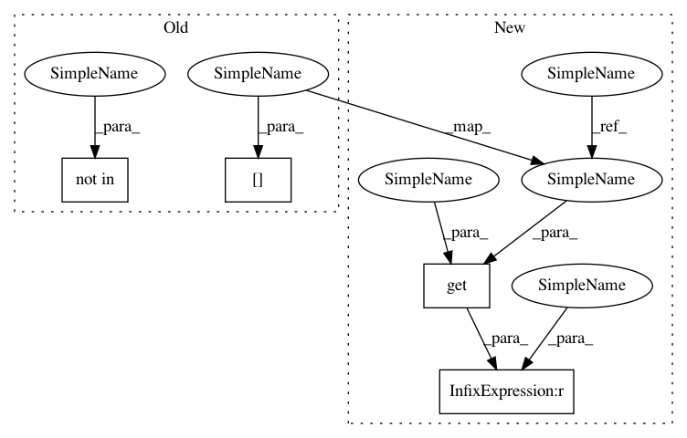

0548aad44b5138ea0bbc96ef8964b986bebcb589,lib/streamlit/watcher/EventBasedFileWatcher.py,_FolderEventHandler,handle_file_change_event,#_FolderEventHandler#Any#,252
Before Change
file_path = os.path.abspath(file_path)
if file_path not in self._watched_files:
LOGGER.debug(
"Ignoring file %s.\nWatched_files: %s",
file_path, self._watched_files)
return
file_info = self._watched_files[file_path]
modification_time = os.stat(file_path).st_mtime
if modification_time == file_info.modification_time:
LOGGER.debug("File timestamp did not change: %s", file_path)
After Change
LOGGER.debug("Don"t care about event type %s", event.event_type),
return
file_path = os.path.abspath(file_path)
file_info = self._watched_files.get(file_path, None)
if file_info is None:
LOGGER.debug(
"Ignoring file %s.\nWatched_files: %s",
file_path, self._watched_files)
return
In pattern: SUPERPATTERN
Frequency: 3
Non-data size: 4
Instances
Project Name: streamlit/streamlit
Commit Name: 0548aad44b5138ea0bbc96ef8964b986bebcb589
Time: 2019-06-18
Author: tconkling@gmail.com
File Name: lib/streamlit/watcher/EventBasedFileWatcher.py
Class Name: _FolderEventHandler
Method Name: handle_file_change_event
Project Name: streamlit/streamlit
Commit Name: e0e9d7350826c7d968e48181cea38bde23942c30
Time: 2019-06-19
Author: tconkling@gmail.com
File Name: lib/streamlit/watcher/EventBasedFileWatcher.py
Class Name: _FolderEventHandler
Method Name: handle_file_change_event
Project Name: chainer/chainercv
Commit Name: dbd720d48c8e36e62953feb269abb9d6ef1173c8
Time: 2018-05-01
Author: Hakuyume@users.noreply.github.com
File Name: chainercv/utils/link.py
Class Name:
Method Name: prepare_link_initialization